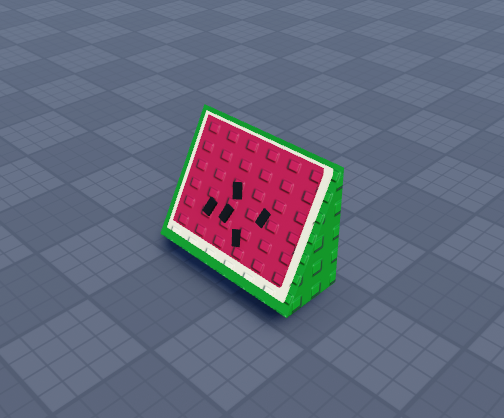

Dragon Fruit
A purple block-style fruit with green exterior details.
ROBLOX ASSET PACK • COMPLETED

OVERVIEW
The Stylized Fruit Asset Pack is a collection of colourful Roblox models designed around a consistent classic-studded look. Each model was kept simple, readable and lightweight so it could be used as a collectible, shop item, decoration or environmental prop.
The set includes grapes, an orange, a pineapple, a watermelon slice and a dragon fruit. The shared proportions, textures and bold colours help the items feel like one complete pack rather than unrelated models.
ASSETS INCLUDED
A purple block-style fruit with green exterior details.
A compact orange model with a simple green leaf and stem.
A bright yellow model with layered green crown pieces.
A triangular slice with rind, flesh and seed details.
A clustered purple bunch with a green top leaf.
GALLERY
CLIENT REVIEW
★★★★★“I’m really happy with the work that was done. From the start, they were quick to respond, easy to communicate with, and very professional. The work was completed on time, and the quality was excellent. You can tell they take pride in what they do and genuinely care about doing a good job.”
— Nysnq • 10/07/2026